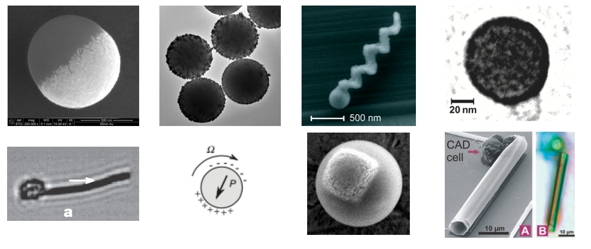
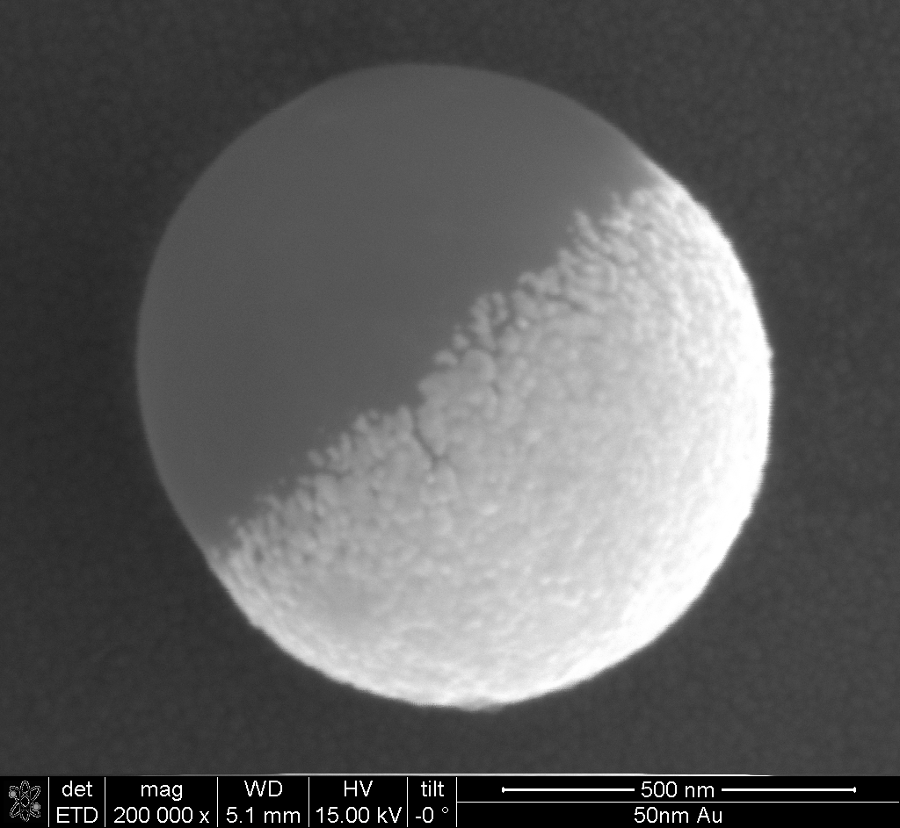
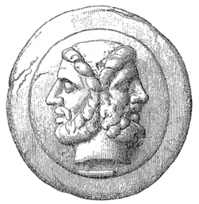
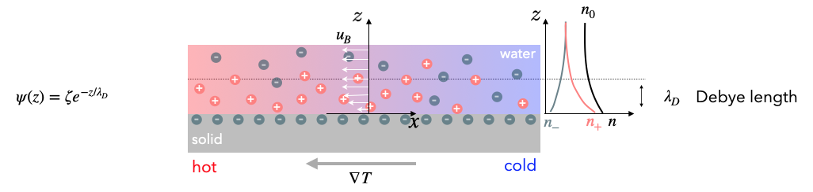
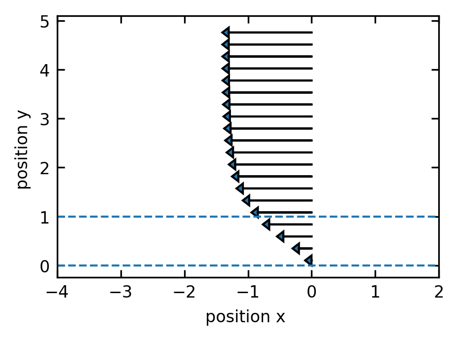
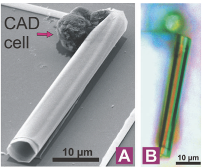
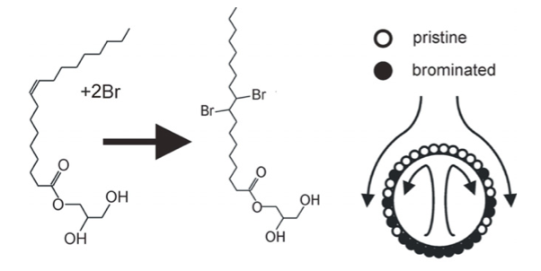
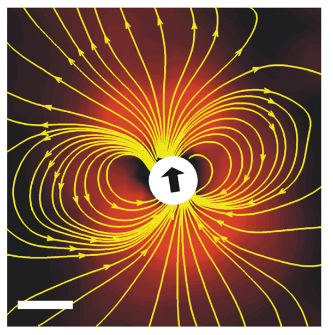
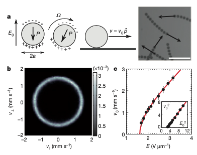

Synthetic active matter represents a cutting-edge frontier in materials science where artificial systems are designed to convert energy into directed motion at the microscale. Unlike passive materials that respond only to external forces, active matter systems harness energy from their environment to generate autonomous, non-equilibrium dynamics. This lecture explores the fundamental physical and chemical mechanisms that drive synthetic active matter, focusing on phoretic phenomena as a primary means of self-propulsion.
These systems typically employ three main approaches: chemical catalysis that creates local concentration gradients, thermal energy conversion that establishes temperature differences, and external field interactions that induce motion through electrical or magnetic stimuli. Nevertheless, additional physical phenomena such as Marangoni forces are used as well especially when propelling liquid droplets. The interplay between these mechanisms and the surrounding fluid environment creates complex boundary layer dynamics that are essential to understanding how synthetic microswimmers operate. Through careful examination of these principles, particularly thermo-osmosis, we can develop a theoretical framework that connects microscopic interactions to macroscopic behaviors in these fascinating non-equilibrium systems.
Contemporary research in this field encompasses diverse systems including Janus particles and artificial microswimmers, light-activated and chemically powered propulsion mechanisms, and active emulsions and droplets that exhibit life-like behaviors. Each of these systems provides unique insights into how microscale objects can achieve controlled motion through energy transduction processes at interfaces.

Figure 1— Various synthetic active particle designs documented in literature: magnetic swimmers (Dreyfus et al., 2005), self-thermophoretic Janus particles (Jiang et al., 2010), catalytic microjet engines (Sanchez et al., 2011), light-activated colloidal surfers (Palacci et al., 2013), motile colloid populations (Bricard et al., 2013), photoresponsive soft microrobots (Palagi et al., 2016), chemotactic synthetic vesicles (Joseph et al., 2017), and multi-mechanism Pt-insulator Janus swimmers (Ibrahim et al., 2017).
In the following sections, we’ll examine the physical principles underlying self-propulsion in synthetic active matter systems. Our initial focus will be on phoretic phenomena, which represent a fundamental mechanism in numerous active particle designs.
Phoretic Phenomena
Phoresis (from the Greek word “phorein” meaning “to carry”) refers to the motion of particles suspended in a fluid when they are subjected to external gradients. In the case of active particles, these gradients can be also self-induced such that particle are called self-phoretic. Unlike Brownian motion, which is random and thermally driven, phoretic motion is deterministic and directed, arising from the asymmetric interactions between the particle surface and the surrounding medium.
The fundamental principle underlying all phoretic phenomena is the breaking of spatial symmetry around a particle. In equilibrium, forces acting on a particle from all directions cancel out, resulting in no net motion. However, when gradients are present—whether in temperature, chemical concentration, or electric potential—this symmetry is broken, leading to net forces that propel the particle.
Physical Principles and Mechanisms
Phoretic motion emerges from the interplay between gradient fields, interface properties, and hydrodynamic responses. The fundamental principle underlying all phoretic phenomena is the breaking of spatial symmetry at interfaces between different phases or materials. This symmetry breaking occurs within a nanometer-thick boundary layer, where the presence of a solid interface alters molecular interactions in the fluid.
Within this boundary layer, gradient fields (temperature, concentration, or electric potential) generate interfacial forces that drive fluid motion parallel to the surface. These forces arise from interactions specific to each phoretic mechanism but share a common mathematical framework.
The effectiveness of phoretic mechanisms depends on the ratio between the particle size (\(a\)) and the boundary layer thickness (\(\lambda\)). For synthetic active matter (typically \(0.1\)-\(100\)\(\mu\text{m}\) particles), these boundary layers are extremely thin relative to the particle size, creating a regime where surface effects dominate. The Péclet number (\(Pe = \frac{Ua}{D}\)) further characterizes the relative importance of advective transport versus diffusion in these systems.
Types of Phoretic Mechanisms
Mechanism
Gradient Quantity
Physical Origin
Direction
Boundary Layer Scale
Thermo-osmosis
Temperature (\(\nabla T_{||}\))
Excess enthalpy in electric double layer; \(h(z) = \rho\psi + nk_BT\)
Cold to hot for attractive interactions
Debye length \(\lambda_D\)
Thermophoresis
Temperature (\(\nabla T\))
Corresponding particle motion from the thermo-osmotic fluid flow around the particle surface
Typically opposite to osmotic flow: hot to cold regions (positive) or cold to hot (negative)
\(\lambda_T \sim \sqrt{\alpha/\omega}\) where \(\omega\) is the characteristic frequency of thermal relaxation
Particle motion resulting from diffusio-osmotic flow at the particle surface
Opposite to the osmotic flow direction; depends on particle-solute interactions
\(\lambda_c \sim \sqrt{D/\omega}\) where \(\omega\) is the characteristic frequency of solute-surface interactions
Electro-osmosis
Electric potential (\(\nabla \phi_{||}\))
Movement of fluid in electric double layer under tangential field
Determined by surface charge and field direction
Debye length \(\lambda_D\)
Electrophoresis
Electric potential (\(\nabla \phi\))
Particle motion due to electro-osmotic flow at the charged particle surface
Opposite to osmotic flow; determined by particle charge
\(\lambda_D \sim 1-10\) nm
As comprehensively reviewed by Anderson, these phoretic mechanisms share a common physical foundation: they all involve interfacial forces that drive fluid motion within a thin boundary layer near surfaces, resulting in relative motion between particles and their surrounding fluid. Anderson’s seminal work establishes a unified framework for understanding these diverse phenomena through the lens of non-equilibrium thermodynamics and low Reynolds number hydrodynamics.
Anderson, J.L. (1989). “Colloid transport by interfacial forces.” Annual Review of Fluid Mechanics, 21, 61–99.
Role in Synthetic Active Matter Systems
Phoretic mechanisms enable synthetic active matter by providing controllable propulsion at microscales where viscous forces dominate. Unlike macroscopic propulsion mechanisms that rely on inertia, phoretic propulsion works efficiently in low Reynolds number environments. This makes it particularly suitable for applications in biological environments, microfluidics, and materials science.


Figure 2— Left: Gold coated polystyrene particle that resembles a so-called Janus particle. Right: The god Janus with two faces.
The design of artificial swimmers typically exploits asymmetric particle geometry (such as Janus particles) or surface functionalization to create self-generated gradients. When combined with external stimuli like light or heat, these systems can achieve directed motion, complex trajectories, and even collective behaviors through interactions between multiple swimmers.
Boundary Layer Dynamics
To analyze phoretic phenomena quantitatively, we must understand how gradients drive fluid motion in the boundary layer. These interfacial forces commonly originate from several physical mechanisms:
Temperature gradients (thermo-osmosis and thermophoresis)
Electrostatic potential gradients (electro-osmosis and electrophoresis)
Concentration gradients (diffusio-osmosis and diffusiophoresis)
Beyond this thin interfacial region (typically nanometers), the fluid exhibits bulk-like properties with no memory of the surface interactions.
The flow within this boundary layer is governed by the Stokes equation with an additional body force term:
\[
\eta \Delta \vec{u}=\nabla p-\vec{f}
\]
where \(\vec{f}\) represents the interfacial force density arising from the gradient-driven mechanisms. This equation can be decomposed into components parallel and perpendicular to the surface:
Normal component:\[
\begin{aligned}
\frac{\partial^2 u_z}{\partial z^2} &= 0 \\
0 &= \frac{\partial p}{\partial z} - f_z
\end{aligned}
\] We assume that there is no flow component normal to the surface near the boundary (no-penetration condition), simplifying the normal component equation to a balance between pressure gradient and normal force density.
For the tangential component, the interplay between pressure gradients and force densities determines the flow profile. The solution can be found by integrating with appropriate boundary conditions:
At the surface: \(u_x(z=0) = 0\) (no-slip condition)
Far from the surface: \(u_x(z \gg \lambda) = u_B\) (constant bulk velocity)
This boundary velocity \(u_B\) creates an effective slip condition that drives the larger-scale flow patterns essential for phoretic propulsion. The physical interpretation is that while the fluid satisfies no-slip at the molecular level, the interfacial forces create an effective slip velocity that establishes a flow field around the particle, ultimately resulting in phoretic motion. This effective slip then resembles the slip velocity the has been introduced in the squirmer model in one of our previous lectures.
The general scaling relationship for phoretic velocities follows:
where μ represents a phoretic mobility coefficient specific to each mechanism, incorporating the surface interaction properties and boundary layer structure.
Thermo-osmosis
Physical Setup and Goal
We want to understand how temperature gradients can drive fluid flow near charged surfaces - a phenomenon called thermo-osmosis. This is particularly important for synthetic active matter where particles can create local temperature gradients to propel themselves.
Thermoplasmonics for Self-Thermophoretic Particles
Noble metal nanoparticles exhibit the unique ability to efficiently convert light into heat through plasmonic resonances, making them excellent nanoscale heat sources for driving self-thermophoretic motion. This phenomenon, known as thermoplasmonics, occurs when the particles’ conduction electrons oscillate collectively upon light irradiation, particularly at their resonant frequency.
Gold and silver nanoparticles are especially effective because:
High absorption cross-sections: They can absorb light with cross-sections several times larger than their physical size
Localized heating: They create steep, localized temperature gradients at the microscale
Tunable resonances: The absorption wavelength can be tuned by altering particle size, shape, or composition
When these plasmonic particles are incorporated into Janus microswimmers (typically as a hemisphere coating), illumination with resonant light creates asymmetric temperature fields around the particle. This temperature asymmetry drives self-thermophoretic motion, with velocities typically scaling as:
\[U \propto \nabla T \propto I \cdot \sigma_{abs}\]
where \(I\) is the illumination intensity and \(\sigma_{abs}\) is the absorption cross-section.
The key advantages of thermoplasmonic propulsion include: - Instantaneous and reversible control through light modulation - Non-invasive actuation without chemical fuels - Precise spatial and temporal control of particle motion
As described by Baffou, Cichos, and Quidant in their review, thermoplasmonic heating enables precise control over temperature fields at the nanoscale, making it an ideal driving mechanism for artificial microswimmers with potential applications in drug delivery, microsurgery, and environmental remediation.
Baffou, G., Cichos, F., & Quidant, R. (2020). Applications and challenges of thermoplasmonics. Nature Materials, 19(9), 946-958.
For this purpose we also have to refer the charge distribution close to charged surfaces in liquids. Consider a charged surface in contact with an electrolyte solution. Near the surface, we have an electric double layer (from Debye-Hückel theory) with excess ions. For example, negative charges at the solid surface would accumulate positive charges in the liquid, while diffusion would like to spread the positive charge evenly. At the same time negative charges are depleted from the region close to the surface.
When we apply a temperature gradient parallel to the surface, the ions respond differently to the temperature change, creating pressure gradients that drive fluid flow.

DoubleLayer
Using this setup we would like to calculate the boundary velocity \(u_B\) that results from a tangential temperature gradient \(\nabla T_{||}\).
Charge Clouds and Poisson Boltzmann Equation
From Debye-Hückel theory for the electric double layer, we have:
Excess charge density:\(\rho = e (n_+-n_-)\) (net charge per unit volume)
Total ion density:\(n=n_++n_-\) (total number of ions per unit volume)
Ion density distributions:\(n_{\pm}=n_0(\exp\left (\mp \frac{e\psi}{k_B T}\right )-1)\)
\(n_0\) = bulk ion density (far from surface)
\(\psi\) = electrostatic potential (decays exponentially from surface)
The Poisson-Boltzmann equation arises when we combine Poisson’s equation from electrostatics (\(\nabla^2\psi = -\rho/\epsilon\epsilon_0\)) with the Boltzmann distribution of ions. Substituting the excess charge density expression, we get:
This nonlinear differential equation can be solved analytically by linearizing it for small potentials (known as the Debye-Hückel approximation, valid when \(e\psi \ll k_BT\)). The linearized form simplifies to:
where \(\kappa^{-1} = \lambda_D\) is the Debye length. The solution yields the exponentially decaying potential profile \(\psi(z) = \psi_0 e^{-\kappa z}\) away from the charged surface.
Forces and Pressure
We need to combine these electrostatic effects with the hydordynamics. The electrostatic force density acting on the fluid is:
\[
\vec{f}=-\rho \nabla \psi
\]
This represents the force per unit volume that the electric field exerts on the excess charge. This means that the charges actually drag the fluid along.
The osmotic pressure from the ion distribution is:
From our boundary layer analysis, we need to calculate \(f_x-\frac{\partial p}{\partial x}\) to find the driving force for fluid motion.
Step 1: Express the pressure
Using the identity \(\exp(x) + \exp(-x) = 2\cosh(x)\), we can express the total ion density as: \[
n = n_0\left(2\cosh\left(\frac{e\psi}{k_B T}\right) - 2\right)
\]
Therefore, the osmotic pressure becomes: \[
p = n_0 k_B T \left(2\cosh\left(\frac{e\psi}{k_B T}\right) - 2\right)
\]
Step 2: Calculate the pressure gradient without approximation
We need to differentiate the pressure with respect to position, accounting for both the temperature and potential gradients:
Now we combine the force and pressure gradient: \[
f_x - \frac{\partial p}{\partial x} = 2en_0\sinh\left(\frac{e\psi}{k_B T}\right) \frac{\partial \psi}{\partial x} - n k_B \frac{\partial T}{\partial x} - \rho \psi \frac{1}{T}\frac{\partial T}{\partial x} - (-\rho) \frac{\partial \psi}{\partial x}
\]
Notice that the first term \(2en_0\sinh\left(\frac{e\psi}{k_B T}\right) \frac{\partial \psi}{\partial x}\) and the last term \(\rho \frac{\partial \psi}{\partial x}\) are equal and opposite (since \(\rho = -2en_0\sinh\left(\frac{e\psi}{k_B T}\right)\)), so they cancel!
Factoring out the temperature gradient: \[
f_x-\frac{\partial p}{\partial x} = -\left(n k_B T + \rho \psi\right) \frac{1}{T}\frac{\partial T}{\partial x}
\]
Or in vector form: \[
\vec{f}-\nabla p= -\left(\rho \psi+n k_{\mathrm{B}} T\right) \frac{\nabla T}{T}
\]
The cancellation of electrostatic terms means that the net driving force comes entirely from the temperature dependence of the ion concentrations, not from direct electrostatic forces!
Physical Interpretation and Final Result
Understanding the excess enthalpy density:
The quantity \(h(z) = \rho\psi + nk_BT\) is called the excess enthalpy density. It has two contributions:
\(nk_BT\): The kinetic energy density of ions (ideal gas contribution)
\(\rho\psi\): The electrostatic interaction energy density
Substituting our expressions for charge density and ion density:
With the potential profile \(\psi(z) = \psi_0 e^{-z/\lambda_D}\), this enthalpy density decays exponentially away from the surface, representing how much extra energy per unit volume exists in the double layer compared to the bulk electrolyte.
The boundary velocity:
Substituting into our boundary layer formula from earlier, we get:
\[
u_B= -\frac{1}{\eta}\int_0^{\infty} z h(z)dz\frac{\nabla T_{||}}{T}
\]
We can integrate this analytically for the linearized case (valid when \(e\psi \ll k_BT\)), which is the Debye-Hückel approximation. This involves substituting our expressions for the excess enthalpy density and potential profile, then solving the resulting integral.
For a charged surface characterized by its zeta potential \(\zeta\) (approximately equal to the surface potential \(\psi_0\) in many models), and recalling that the Debye length \(\lambda_D\) is related to permittivity through \(\lambda_D^2 = \frac{\varepsilon k_B T}{2 e^2 n_0}\) (where \(\varepsilon \equiv \epsilon\epsilon_0\) is the total permittivity of the fluid, written this way from here on), we can express the boundary velocity as:
Where \(\nabla T_{||}\) represents the tangential temperature gradient along the surface. This elegant expression directly relates the thermo-osmotic flow to the zeta potential, fluid permittivity, viscosity, and temperature gradient.
We can define the thermo-osmotic mobility \(\chi\) to simplify this expression:
\[
\chi = \frac{\varepsilon \zeta^2}{8 \eta}
\]
Which gives us the more compact form:
\[
u_B = \chi \frac{\nabla T_{||}}{T}
\]
Code
## electrostatic potentialdef psi(z,lam_D):return(np.exp(-z/lam_D))## n+def npl(z,lam_D,n):return(n*(np.exp(-psi(z,lam_D))-1))## n-def nmi(z,lam_D,n):return(n*(np.exp(psi(z,lam_D))-1))## total ndef nt(z,lam_D,n):return(2*n*(np.cosh(psi(z,lam_D))-1))def h(z,lam_D,n):return((npl(z,lam_D,1)-nmi(z,lam_D,1))*psi(z,lam_D)+nt(z,lam_D,1))plt.figure(figsize=get_size(8,6))plt.axhline(y=0,linestyle="--")plt.axhline(y=1,linestyle="--")z=np.linspace(0.1,5,1000)inth=-np.cumsum(z*(h(z,1,1))*(z[1]-z[0])) ## numerically integrate the excess enthalpy *z[plt.arrow(0,z[l],-inth[l]*5,0,head_width=0.2,head_length=0.1) for l inrange(0,len(z),50)]plt.xlim(-4,2)plt.xlabel("position x ")plt.ylabel("position y ")plt.tight_layout()plt.show()

Figure 3— Boundary layer flow field near a charged surface showing velocity vectors as a function of distance from the surface. The arrows represent the tangential flow velocity generated by electrostatic forces and ion concentration gradients in the electric double layer. The flow magnitude decreases exponentially with distance from the surface (y-axis), demonstrating the confined nature of boundary layer flows that drive phoretic propulsion.
Physical picture of the flow:
Length scales: The flow occurs in a thin layer of thickness \(\lambda_D\) (typically 1-10 nm for typical electrolytes)
Velocity scales: Within this nanometer layer, velocities can reach tens of μm/s
Direction: If \(h(z) < 0\) (attractive surface interactions), flow goes from cold to hot regions
Mechanism: Temperature changes the ion equilibrium, creating pressure imbalances that drive flow
This boundary velocity \(u_B\) acts as an effective slip condition for the bulk fluid flow around a particle. When a particle creates local temperature gradients (e.g., through light absorption), these gradients drive thermo-osmotic flows that propel the particle through the fluid - the basis of thermophoretic swimmers!
Boundary velocities: \(u_B \sim 10-100\) μm/s per K/μm temperature gradient
These velocities are sufficient to propel micron-sized particles at speeds comparable to biological microswimmers
Relation to particle velocity: For a spherical particle with radius \(a \gg \lambda_D\), the particle velocity \(U\) is related to the boundary velocity by integrating over the particle surface:
\[
U = -\frac{2}{3}\langle u_B \rangle
\]
where \(\langle u_B \rangle\) is the surface-averaged boundary velocity. This minus sign means that the particle moves in the direction opposite to the average fluid flow at its surface. For a uniform temperature gradient, and substituting our expression for \(u_B\) in terms of the zeta potential, this gives:
\[
U = -\frac{2}{3} \cdot \frac{\varepsilon \zeta^2}{8 \eta} \frac{\nabla T}{T} = -\frac{\varepsilon \zeta^2}{12 \eta T}\nabla T = -D_T\nabla T
\]
where \(D_T = \frac{\varepsilon \zeta^2}{12 \eta T}\) is the thermophoretic mobility coefficient. This coefficient depends on the square of the zeta potential, the permittivity of the medium, and inversely on temperature and viscosity. The quadratic dependence on \(\zeta\) means that particles with either positive or negative surface charge will move in the same direction, typically from hot to cold regions.
Diffusio-osmosis
Similar to thermo-osmosis, diffusio-osmosis represents fluid flow generated near a solid surface due to concentration gradients parallel to the surface. When solute molecules interact differently with the surface compared to the solvent, a concentration gradient creates an effective interfacial force.
For a dilute solution with solute concentration \(c\), the boundary velocity can be expressed as:
Here, \(\Phi(z)\) represents the interaction potential between the solute and the surface, which typically decays over a characteristic length scale \(\lambda_c\). The sign of \(\mu_D\) depends on whether these interactions are attractive (negative) or repulsive (positive).
For a spherical particle exhibiting diffusiophoresis in a concentration gradient, the particle velocity becomes:
\[
U = -\frac{2}{3} \langle u_B \rangle = -\frac{2}{3} \mu_D \nabla c = -D_c \nabla c
\]
where \(D_c\) is the diffusiophoretic mobility coefficient. Unlike thermophoresis, the direction of motion depends on the sign of the interaction potential, with particles typically moving toward higher concentration regions for attractive interactions and toward lower concentration regions for repulsive interactions.
Electro-osmosis
Electro-osmosis occurs when an electric potential gradient parallel to a charged surface drives fluid motion. Unlike simple electrostatic forces, this phenomenon results from the osmotic pressure gradient that develops within the electric double layer due to the applied potential gradient.
When an external electric field \(E_{||}\) (which is related to the potential gradient by \(E_{||}=-\nabla\phi_{||}\)) is applied parallel to a charged surface, it creates an imbalance in the ion distribution within the double layer. This osmotic imbalance generates a tangential flow along the surface.
For a surface with zeta potential \(\zeta\), the boundary velocity is:
This is the Helmholtz-Smoluchowski equation, where \(\varepsilon\) is the fluid permittivity and \(\eta\) is the viscosity. For a negatively charged surface (negative \(\zeta\)), the flow moves in the direction of the applied field.
For a particle with uniform zeta potential in an electric field, the resulting electrophoretic velocity is:
\[
U = \frac{\varepsilon \zeta}{\eta} E = \mu_E E
\]
where \(\mu_E = \frac{\varepsilon \zeta}{\eta}\) is the electrophoretic mobility (the Helmholtz-Smoluchowski result, valid for a thin double layer, \(\kappa a \gg 1\)). There is no residual factor of \(\frac{2}{3}\) here – but not because the field is uniform around the particle. In fact an insulating sphere distorts the applied field, enhancing the tangential field at the surface to \(\frac{3}{2} E \sin\theta\); this \(\frac{3}{2}\) exactly cancels the \(\frac{2}{3}\) that comes from surface-averaging the slip, leaving the full \(\mu_E = \varepsilon\zeta/\eta\). Equivalently, the outer electro-osmotic flow is irrotational, which is why the electrophoretic mobility is independent of particle size and shape.
These mechanisms can be combined in synthetic active matter systems, either working with external gradients or, more commonly, with self-generated gradients created through asymmetric catalytic or physical properties.
Self-diffusiophoresis in catalytic Janus particles
Janus particles with catalytic properties represent a key example of synthetic microswimmers that utilize diffusiophoresis for self-propulsion. Consider a spherical particle with one hemisphere coated with platinum that catalyzes the decomposition of hydrogen peroxide:
This reaction occurs preferentially on the platinum-coated side, creating an asymmetric distribution of reaction products. The local concentration gradients of \(\mathrm{H}_2\mathrm{O}_2\), \(\mathrm{O}_2\), and \(\mathrm{H}_2\mathrm{O}\) around the particle surface drive diffusio-osmotic flows.
Several mechanisms contribute to propulsion:
Self-electrophoresis: The catalytic reaction can produce charged intermediates (\(\mathrm{H}^+\), \(\mathrm{OH}^-\)), creating local electric fields that drive electrophoretic motion. These charged species accumulate asymmetrically: \(\mathrm{H}^+\) ions typically accumulate near the catalytic (Pt) side while \(\mathrm{OH}^-\) ions diffuse further into the solution, creating an electric field that points from the catalytic to the non-catalytic hemisphere.
Neutral self-diffusiophoresis: Even without charged species, the concentration gradients of neutral molecules interact differently with the particle surface, generating slip velocities:
\[u_{\text{slip}} = \mu_D \nabla c_{||}\]
where \(\mu_D\) depends on the specific interaction potentials between these molecules and the particle surface. Oxygen (\(\mathrm{O}_2\)) accumulates predominantly near the catalytic Pt surface where it’s produced, while hydrogen peroxide (\(\mathrm{H}_2\mathrm{O}_2\)) is depleted in this region. This creates a concentration profile where reaction products are highest at the catalytic side and decrease radially away from it.
Bubble propulsion: At higher \(\mathrm{H}_2\mathrm{O}_2\) concentrations, oxygen accumulates to supersaturated levels directly at the catalytic surface, eventually nucleating into bubbles that form and detach from the catalytic side, providing thrust through recoil forces.

Figure 4— Bubble propulsion from a rolled-up microtube coated with platinum catalyzing H₂O₂ decomposition (S. Sanchez et al., JACS 133, 14860 (2011))
The resulting particle velocity scales approximately with:
where \(\dot{r}\) represents the reaction rate per unit area, \(D\) is the diffusion coefficient of the product species, and \(\lambda_c\) is the interaction range. Note that the self-phoretic speed is, to leading order, independent of the particle radius: a fixed surface reaction rate per area sets a surface concentration gradient \(\nabla c|_\text{surf} \sim \dot{r}/D\) that does not scale with \(a\).
The precise direction of motion (toward or away from the catalytic side) depends on the specific interactions between reaction products and the particle surface, which can be engineered through surface chemistry modifications.
Marangoni Swimmers and Surface-Active Propulsion
Marangoni propulsion represents a distinct mechanism for synthetic active matter that relies on surface tension gradients rather than bulk fluid gradients. Named after Italian physicist Carlo Marangoni, this effect occurs at fluid interfaces when surface tension varies spatially.


Figure 5— Left: Marangoni-driven droplet swimmer showing the asymmetric release of surfactant. Right: Flow field around a self-propelled droplet showing the characteristic dipolar pattern. (Source: Thutupalli, S., Seemann, R. & Herminghaus, S. Swarming behavior of simple model squirmers. New J Phys 13, 073021 (2011))
The fundamental physical principle is straightforward: fluid flows from regions of low surface tension toward regions of high surface tension. For a fluid interface with surface tension \(\gamma(x)\) that varies along the interface, the resulting Marangoni stress is:
\[\tau_M = \nabla_s \gamma\]
where \(\nabla_s\) is the surface gradient operator. This stress generates a tangential flow with velocity proportional to the surface tension gradient:
\[u_M \propto \nabla_s \gamma\]
Surface tension gradients can arise from:
Temperature variations: Most liquids show decreased surface tension at higher temperatures, creating thermal Marangoni flows.
Chemical composition: Surfactants or soluble compounds that alter surface tension create solutal Marangoni flows.
Calculating Marangoni Stresses and Flow Fields
The flow field around a droplet driven by Marangoni effects can be calculated by considering the stress balance at the interface. For a fluid interface between two immiscible fluids (labeled 1 and 2), the tangential stress balance is:
where \(\eta_i\) is the viscosity of fluid \(i\), \(u_i\) is the tangential velocity component, \(\partial/\partial n\) represents the derivative normal to the interface, and \(\nabla_s \gamma\) is the surface tension gradient. Note that each term \(\eta_i\,\partial u_i/\partial n\) is the viscous shear stress – the tangential traction on the interface – given by viscosity times the shear rate (the normal derivative of the tangential velocity); the word “tangential” here refers to the direction of the force, not to the direction of the derivative. This is the tangential projection of the general interfacial stress-jump condition \([\![\boldsymbol{\sigma}\cdot\hat{\mathbf{n}}]\!] = \gamma\kappa\,\hat{\mathbf{n}} - \nabla_s\gamma\) (whose normal projection is the Young-Laplace law \(\Delta p = \gamma\kappa\)): a massless interface must be force-free, so the jump in viscous shear stress between the two fluids is balanced by the surface-tension gradient (the Marangoni stress), which is what drives the flow.
For a spherical droplet with radius \(a\) in the low Reynolds number regime, the flow field can be obtained by solving the Stokes equations with this boundary condition. When the surface tension varies as \(\gamma(\theta) = \gamma_0 + \Delta\gamma \cos\theta\) (with \(\theta\) measured from the direction of motion), the droplet swims force-free, so its exterior disturbance flow (for \(r > a\)) is a source dipole decaying as \(1/r^3\):
where \(\mathbf{p}\) is the unit vector along the surface tension gradient (the swimming direction), \(\hat{\mathbf{r}} = \mathbf{r}/r\), \(\eta_o\) is the viscosity of the outer fluid, and \(U\) is the droplet speed given below. Because the droplet exerts no net force on the fluid, the slowly decaying (\(1/r\)) Stokeslet term is absent; the leading term is the \(1/r^3\) source dipole characteristic of a neutral squirmer (a \(\gamma \propto \cos\theta\) profile excites only the \(B_1\) squirming mode). Higher angular harmonics in \(\gamma(\theta)\) would add a \(1/r^2\) stresslet and produce pusher- or puller-type far fields.
The droplet velocity can be calculated from this flow field as:
where \(\lambda = \eta_i/\eta_o\) is the viscosity ratio between inner and outer fluids. For highly viscous droplets (\(\lambda \gg 1\)), this simplifies to \(U \approx \frac{a\Delta\gamma}{6\eta_o\lambda} = \frac{a\Delta\gamma}{6\eta_i}\), while for bubbles or low-viscosity droplets (\(\lambda \ll 1\)), it approaches \(U \approx \frac{a\Delta\gamma}{4\eta_o}\).
For a small droplet or particle at an interface, asymmetric modification of the surrounding surface tension creates net propulsion. The general velocity scaling follows:
\[U \sim \frac{\Delta \gamma L}{\eta}\]
where \(\Delta \gamma\) represents the surface tension difference, \(L\) is the characteristic length scale, and \(\eta\) is the fluid viscosity.
Several synthetic active matter systems exploit Marangoni propulsion:
Camphor boats: Perhaps the oldest example, dating back to the 19th century, involves a piece of camphor placed on a water surface. As camphor dissolves, it lowers the local surface tension, creating propulsion away from the dissolution region.
Self-propelled liquid droplets: Oil droplets containing surfactant precursors can move autonomously on water surfaces when the surfactant release is asymmetric. The general velocity of such droplets scales as:
\[U \approx \frac{R \Delta \gamma}{3\eta}\]
where \(R\) is the droplet radius and \(\Delta \gamma\) is the surface tension difference between the front and back of the droplet.
Artificial microswimmers with local heating: Particles with asymmetric light absorption can create temperature gradients when illuminated, generating thermal Marangoni flows that propel the particle.
The direction of motion typically points away from the region where surface tension is reduced (e.g., where surfactant is released or where temperature is higher). This creates an interesting contrast with phoretic mechanisms: while phoretic swimmers often move toward their catalytic side, Marangoni swimmers typically move away from their active region.
Marangoni propulsion is particularly effective for active matter at fluid interfaces and for liquid droplet systems, complementing the bulk fluid mechanisms of phoretic propulsion. The combination of these mechanisms has led to diverse synthetic microswimmer designs with complex behaviors including chemotaxis, phototaxis, and collective motion.
Quincke Rollers and Electrorotation
Quincke rotation represents another fascinating electrokinetic phenomenon in synthetic active matter. When a dielectric particle suspended in a weakly conducting liquid is placed in a uniform DC electric field exceeding a critical threshold, it can spontaneously start rotating around an axis perpendicular to the field direction. This phenomenon, first described by G. Quincke in 1896, results from an electrohydrodynamic instability. The weak conductivity of the liquid is essential: it is what allows free charge to accumulate at the particle-liquid interface and drive the instability, so a perfectly insulating liquid produces no rotation (this requirement is made precise in the callout below).

Figure 6— Sketch of a Quincke roller showing its rotation and motion mechanism
The physical mechanism can be understood through the basic principles of electrostatics and fluid dynamics:
Charge distribution: Both the particle (permittivity \(\varepsilon_p\), conductivity \(\sigma_p\)) and the surrounding liquid (permittivity \(\varepsilon_l\), conductivity \(\sigma_l\)) develop surface charges when exposed to an electric field.
Charge response times: When an electric field is applied, charges in both the particle and fluid need time to redistribute. This characteristic time scale, called the charge relaxation time, is given by \(\tau = \varepsilon/\sigma\) for each material - essentially how quickly the material can respond to electrical changes. The ratio of these response times is crucial: \[R = \frac{\tau_p}{\tau_l} = \frac{\varepsilon_p \sigma_l}{\varepsilon_l \sigma_p}\]
Charge Relaxation Times
The charge relaxation times arise from the fundamental equations of electrodynamics in conducting media. Starting with Maxwell’s equations and the charge conservation principle:
where \(\mathbf{D} = \varepsilon \mathbf{E}\) is the electric displacement field, \(\rho_f\) is the free charge density, and \(\mathbf{J} = \sigma \mathbf{E}\) is the current density in a conducting medium.
Combining these equations and assuming uniform material properties:
where \(\tau = \varepsilon/\sigma\) is the charge relaxation time - representing the characteristic timescale for charge redistribution.
For the interfacial relaxation time \(\tau_i = \frac{\varepsilon_p + 2\varepsilon_l}{\sigma_p + 2\sigma_l}\), the factors of 2 emerge from solving the Laplace equation for a spherical particle in a uniform field. When deriving the potential distribution around a dielectric sphere in a uniform field, the solution involves matching boundary conditions at the interface. These boundary conditions (continuity of potential and normal component of the displacement field) lead to this specific combination of material properties when we determine how quickly the interfacial polarization responds to changes in the applied field.
Instability mechanism: The behavior depends on which material responds faster:
When \(R < 1\): The particle responds faster than the fluid, and the system remains stable with the particle’s induced dipole aligned with the field.
When \(R > 1\): The fluid responds faster than the particle. This creates an unstable situation where any small perturbation causes the dipole to misalign with the field, generating a torque that amplifies the rotation.
The liquid must be weakly conducting
Quincke rotation cannot occur in a perfectly insulating liquid. The mechanism is driven by free (Ohmic) charge accumulating at the particle-liquid interface, and free charge that can move and build up requires a finite conductivity. If the liquid were a perfect dielectric (\(\sigma_l = 0\)), its charge-relaxation time \(\tau_l = \varepsilon_l/\sigma_l\) would diverge, so \(R = \tau_p/\tau_l \to 0 < 1\) and the anti-aligned free-charge dipole that drives the instability never forms.
The condition \(R>1\) (i.e. \(\varepsilon_p\sigma_l > \varepsilon_l\sigma_p\)) means the liquid must relax faster than the particle: with comparable permittivities the particle is essentially insulating and the liquid is the slightly more conducting phase that carries the free charge.
But it must be only weakly conducting. Too close to insulating (\(\sigma_l \to \sigma_p\)) sends \(R\to 1\), where \(\chi^\infty-\chi^0\to 0\) and the threshold \(E_c\to\infty\); too conducting shrinks \(\tau_i\) (raising \(E_c \sim \sqrt{\sigma_l}\)) and brings Ohmic heating, electrode polarization, and electrolysis. Experimentally one hits this intermediate window by dissolving a trace of an ionic surfactant (e.g. AOT) in an apolar oil such as hexadecane to set a small, controlled conductivity (Bricard et al., Nature 2013).
The fundamental physics can be described by coupling electrostatics with rotational dynamics:
An electric field \(\mathbf{E}\) exerts a torque on the particle’s dipole moment \(\mathbf{P}\): \[\mathbf{T}_e = \mathbf{P} \times \mathbf{E}\]
The dipole moment consists of two parts: an instantaneous component and a delayed component from free charge accumulation at the interface: \[\mathbf{P} = \mathbf{P}_\infty + \mathbf{P}_f\]
The free charge component evolves according to: \[\frac{d\mathbf{P}_f}{dt} = -\frac{1}{\tau_i}\mathbf{P}_f + \varepsilon_l a^3 \mathbf{\Omega} \times \mathbf{E}\] where \(\tau_i\) is a distinct interfacial relaxation time scale (different from the individual charge relaxation times \(\tau_p\) and \(\tau_l\)). This \(\tau_i\) characterizes how quickly charges redistribute at the particle-fluid interface and depends on the combined electrical properties of both materials: \(\tau_i = \frac{\varepsilon_p + 2\varepsilon_l}{\sigma_p + 2\sigma_l}\). The parameter \(a\) is the particle radius.
The particle’s rotation follows Newton’s second law for rotation: \[I\frac{d\mathbf{\Omega}}{dt} = \mathbf{T}_e - 8\pi\eta a^3 \mathbf{\Omega}\] where \(I\) is the moment of inertia and the second term represents viscous drag in the fluid.
For a spherical particle there exists a critical field strength – independent of the particle radius (the electrical torque and the viscous drag both scale as \(a^3\), so \(a\) cancels): \[E_c = \sqrt{\frac{2\eta}{\varepsilon_l\,\tau_i\,(\chi^\infty - \chi^0)}}, \qquad \chi^0 = \frac{\sigma_p-\sigma_l}{\sigma_p+2\sigma_l},\quad \chi^\infty = \frac{\varepsilon_p-\varepsilon_l}{\varepsilon_p+2\varepsilon_l}\]
where \(\chi^0\) and \(\chi^\infty\) are the low- and high-frequency (Clausius-Mossotti) polarization coefficients. Since \(\chi^\infty - \chi^0 = \dfrac{3(\varepsilon_p\sigma_l - \varepsilon_l\sigma_p)}{(\varepsilon_p+2\varepsilon_l)(\sigma_p+2\sigma_l)}\), the threshold is real – and rotation is possible – exactly when \(\chi^\infty > \chi^0\), which is the same condition as \(R>1\) found above.
Above this threshold, the particle rotates with angular velocity: \[\Omega = \frac{\sigma_l}{\varepsilon_l} \sqrt{\frac{E^2}{E_c^2} - 1}\]
When these rotating particles are placed near a surface, they convert rotational motion into translation, rolling like microscopic wheels. These “Quincke rollers” can achieve significant speeds (hundreds of μm/s) and exhibit fascinating collective behaviors:
Spontaneous ordering: At sufficient densities, initially random collections of rollers self-organize into coherent flocks and vortices.
Phase transitions: The system demonstrates density-dependent transitions from disordered motion to organized collective motion, reminiscent of active matter phase transitions.
Pattern formation: Under confinement, Quincke rollers form complex dynamic patterns including lanes, vortices, and fluctuating clusters.
The Quincke instability provides a robust mechanism for creating synthetic active matter without chemical fuels, requiring only an external electric field. Unlike phoretic mechanisms that rely on gradients, Quincke propulsion works in uniform fields, offering distinct advantages for experimental control and theoretical analysis.
References
Anderson, J.L. (1989). “Colloid transport by interfacial forces.” Annual Review of Fluid Mechanics, 21, 61–99.
Bricard, A., Caussin, J.B., Desreumaux, N., Dauchot, O., & Bartolo, D. (2013). “Emergence of macroscopic directed motion in populations of motile colloids.” Nature, 503(7474), 95-98.
Quincke, G. (1896). “Ueber Rotationen im constanten electrischen Felde.” Annalen der Physik und Chemie, 59, 417-486.
Howse, J.R., Jones, R.A.L., Ryan, A.J., Gough, T., Vafabakhsh, R., & Golestanian, R. (2007). “Self-Motile Colloidal Particles: From Directed Propulsion to Random Walk.” Physical Review Letters, 99(4), 048102.
Bregulla, A.P., Yang, H., & Cichos, F. (2014). “Stochastic Localization of Microswimmers by Photon Nudging.” ACS Nano, 8(7), 6542-6550.
Jiang, H.R., Yoshinaga, N., & Sano, M. (2010). “Active Motion of a Janus Particle by Self-Thermophoresis in a Defocused Laser Beam.” Physical Review Letters, 105(26), 268302.
Buttinoni, I., Volpe, G., Kümmel, F., Volpe, G., & Bechinger, C. (2012). “Active Brownian motion tunable by light.” Journal of Physics: Condensed Matter, 24(28), 284129.